RUS.DRACOR.ORG
A CORPUS FOR THE QUANTITATIVE RESEARCH OF RUSSIAN DRAMA
Lecture at UBC CENES, Oct 20, 2020
Daniil Skorinkin
dskorinkin@hse.ru
- hum.hse.ru/digital and @dh_hse at Twitter
- DH contact point for the entire Faculty of Humanities
- strong interdisciplinary orientation (literature, cultural studies, linguistics, history, philosophy, media, geography)
- fostering cross-faculty collaboration
- strong focus on research and education (digital literacy courses, first DH Master’s course in Russia)
And if you're curious about the overall state of DH in Russia... 💻🇷🇺
I suggest you check out this presentation by my colleague Frank Fischer
And now: RUS.DRACOR.ORG
- Objective: grow and maintain a corpus of Russian-language drama from around 1740 to around 1940
- Main motivation: social network analysis of literary (dramatic) texts
- But also other types of formal quantitative analysis of drama
Lots of networks!
Network analysis of literature
is it a thing?
Networks are a useful auxiliary model for character-systems
Brief example: networks of war and peace (part of my PhD thesis)
Rostov family keeps 'clustering' together throughout the book
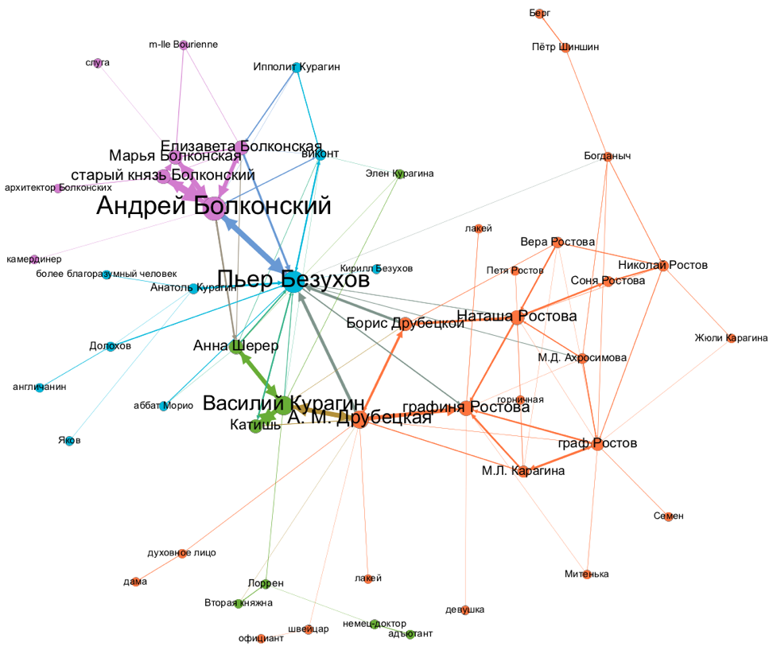War-related parts have sparser networks
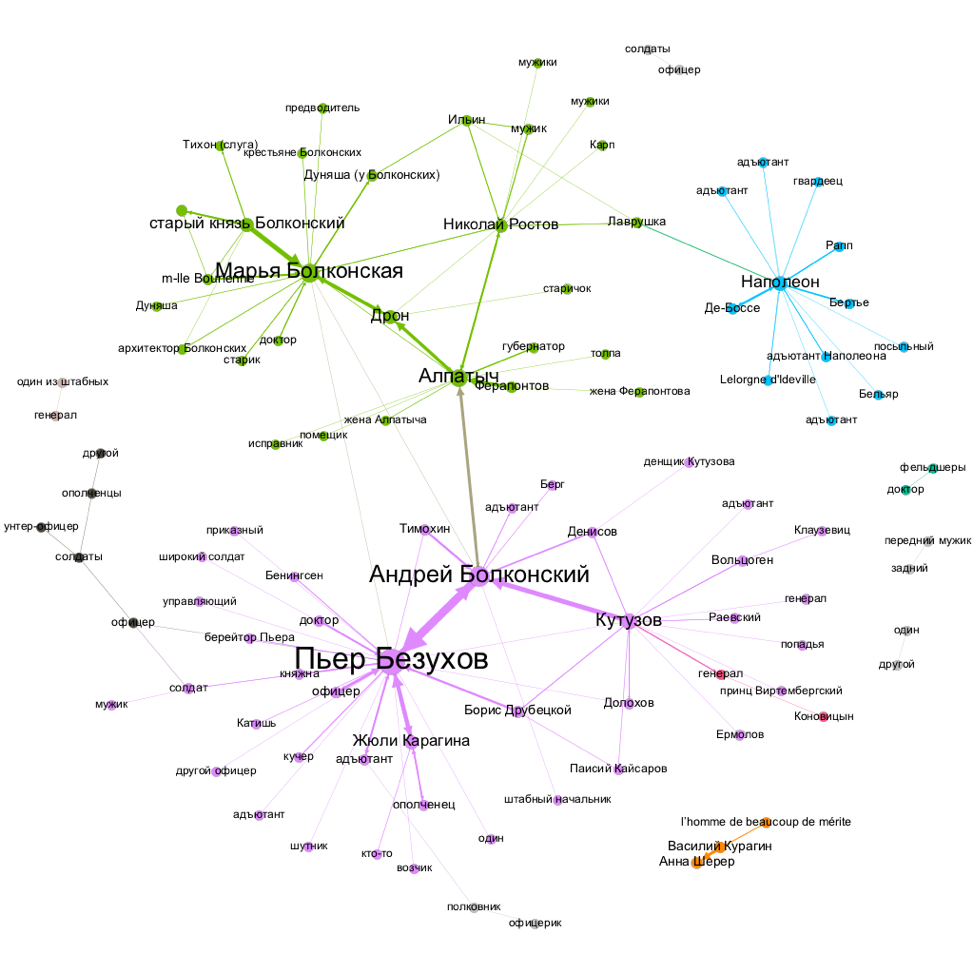'Aide-de-camp' type heroes have high network 'betweennees'
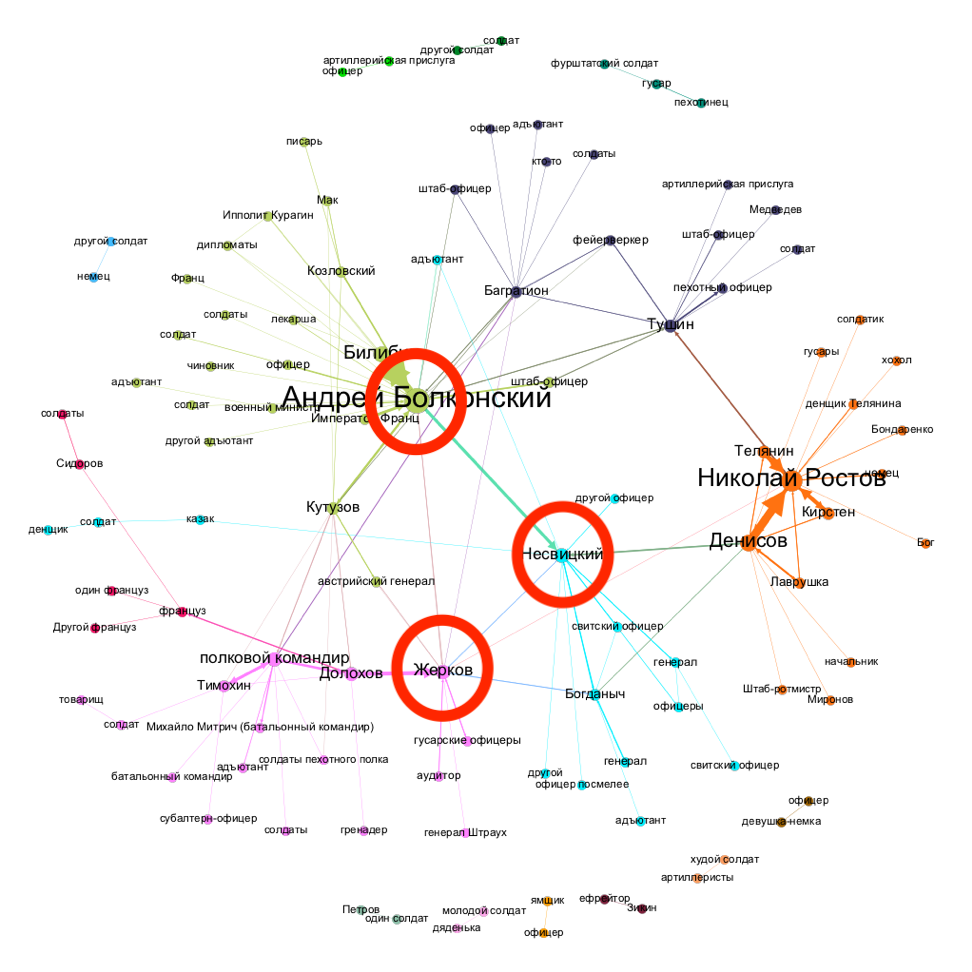'Aide-de-camp' type heroes have high network 'betweennees'
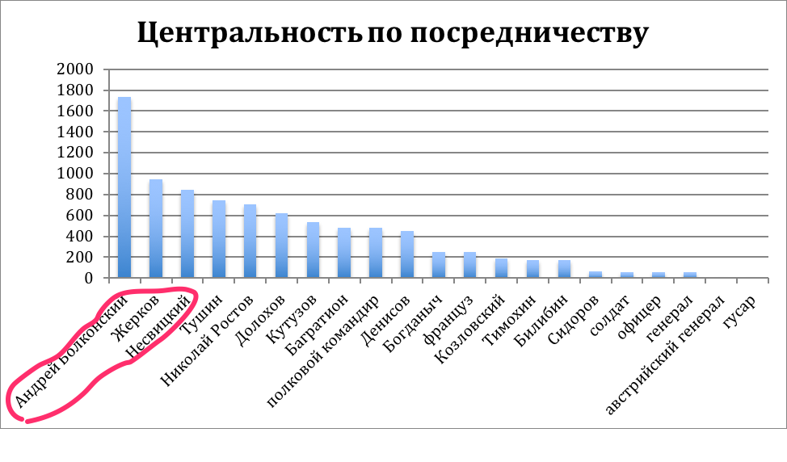Epilogue is the densest part (though two families still cluster apart)

Network analysis of literature is not exactly a new thing
90-es: anthropologists bring Networks to Literary studies:
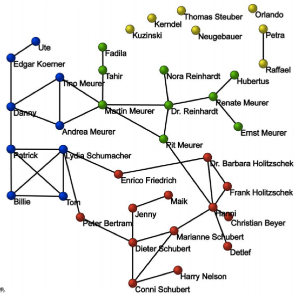2000-es: First large-scale research
The Marvel Universe, networks extracted from 10k+ comic books

- Alberich, R., Miro-Julia, J., Rossello, F. (2002), Marvel universe looks almost like a real social network.
- (picture source) P. M. Gleiser. How to become a superhero. Journal of Statistical Mechanics: Theory and Experiment, (09):P09020, 2007.
..and many others followed
- James Stiller, Daniel Nettle, and Robin I. M. Dunbar (2003) The Small World of Shakespeare’s Plays.Human Nature 14(4):397---408.
- “Weak Links and Scene Cliques Within the Small World of Shakespeare,” Journal of Cultural and Evolutionary Psychology 3, no. 1 (2005)
- Elson, D. K., Dames, N. and McKeown, K. (2010), Extracting Social Networks from Literary Fiction, Proceedings of ACL 2010, Uppsala, Sweden.
- J. Rydberg-Cox. Social Networks and the Language of Greek Tragedy. Journal of the Chicago Colloquium on Digital Humanities and Computer Science, 1(3):11, 2011.
- Agarwal A., Corvalan A., Jensen J., Rambow O. (2012), Social network analysis of Alice in Wonderland. Proceedings of the NAACL HLT 2012 Workshop on Computational Linguistics for Literature, pages 88–96, Montreal, Canada.
'Reinvention' of Literary Networks by Franco Moretti
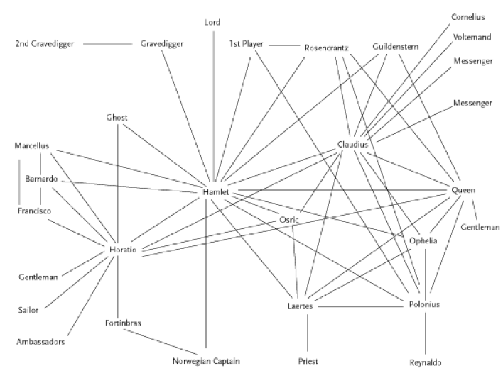Moretti advocates the use of networks
"[Networks] make visible specific ‘regions’ within the plot as a whole <...>. Take the characters who are connected to both Claudius and Hamlet <...>: except for Osric and Horatio, whose link to Claudius is however extremely tenuous, they are all killed <...>; what is truly deadly, is the characters’ position in the network, chained to the warring poles of king and prince. Outside of that bold region, no one dies in Hamlet. The tragedy is all there".
Moretti advocates the use of networks
"You reduce the text to characters and interactions, abstract them from everything else, and this process of reduction and abstraction makes the model obviously much less than the original object — just think of this: I am discussing Hamlet, and saying nothing about Shakespeare’s words — but also, in another sense, much more than it, because a model allows you to see the underlying structures of a complex object. It’s like an X-ray: suddenly, you see the region of death <...> which is otherwise hidden by the very richness of the play".
Scaling things up!
German Corpus: 465 plays
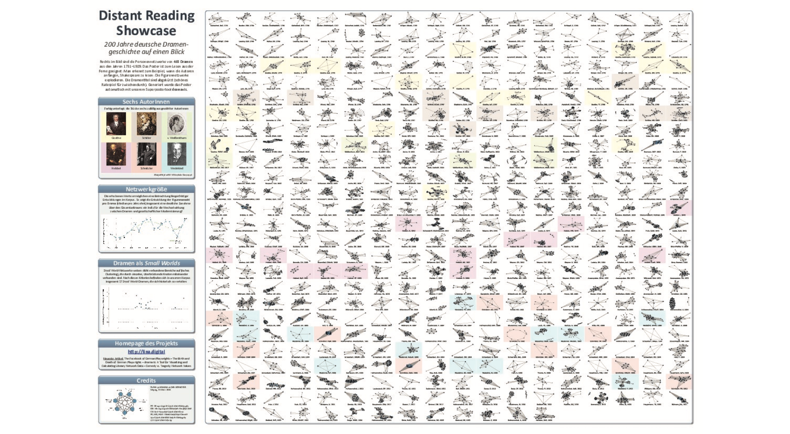Observations from the bird's eye
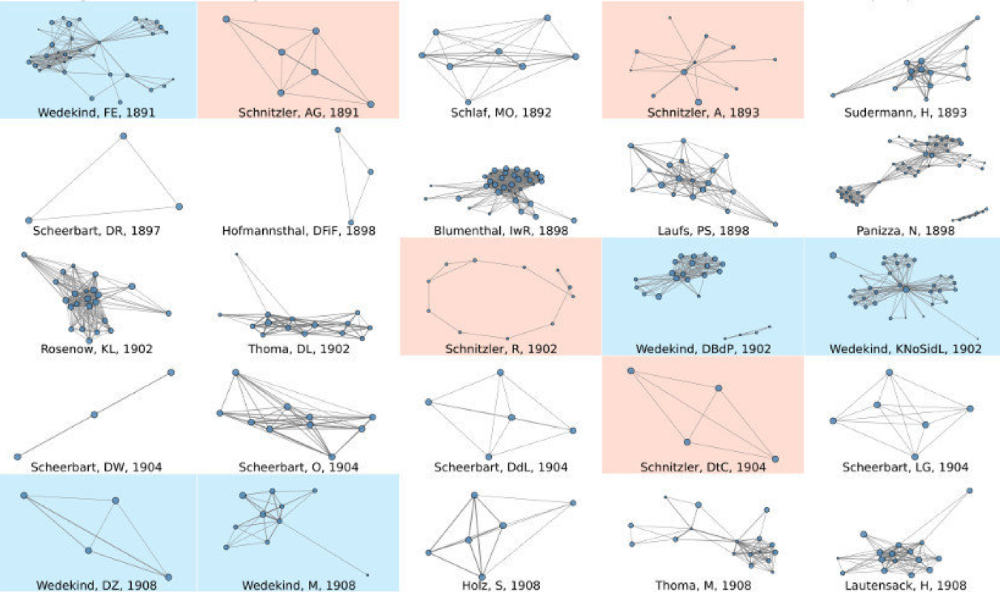Emerging play structures...
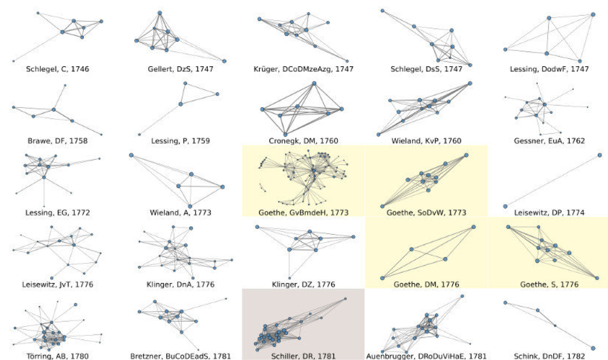Goethe-Shakespeare parallelism
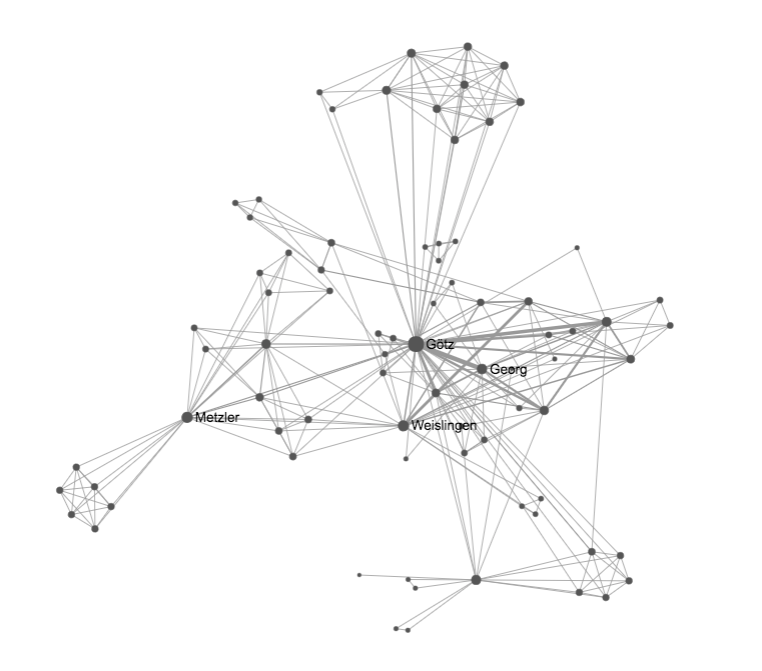 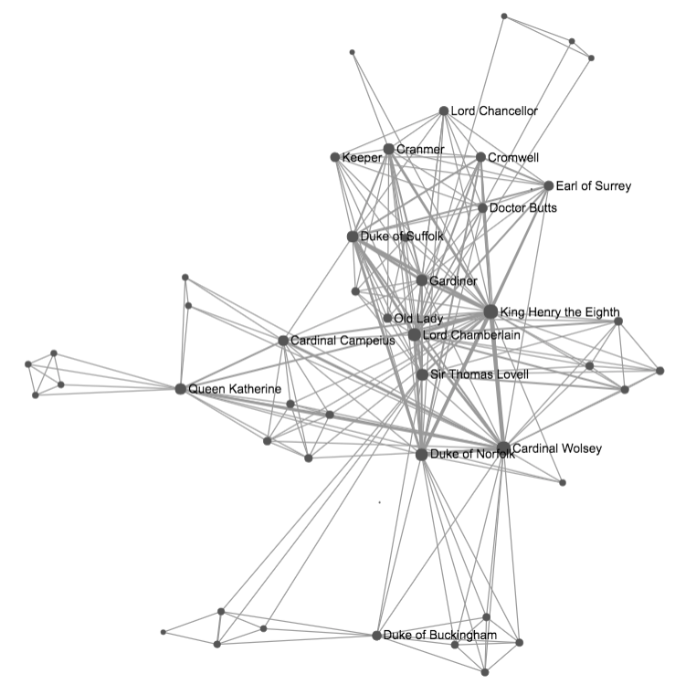And now on Russian data!

Zooming in on Boris Godunov
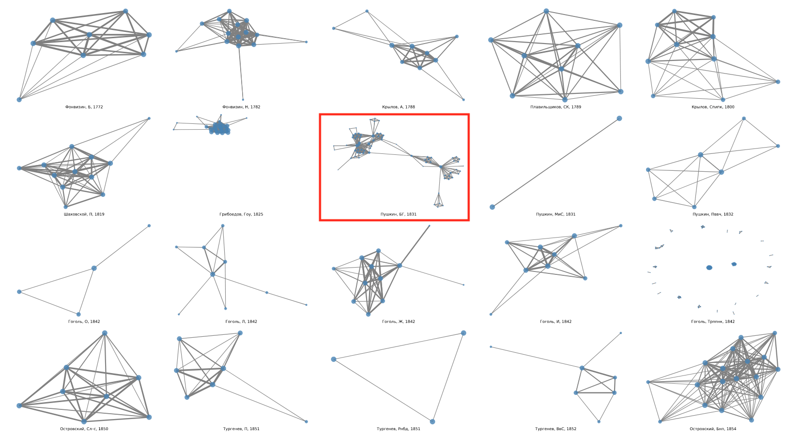Same as Goethe — too much Shakespeare!
"Не смущаемый никаким иным влиянием, Шекспиру я подражал в его вольном и широком изображении характеров, в небрежном и простом составлении планов…"
("Unaffected by any other [literary] influence, I was following Shakespeare in his free and broad depiction of characters, in his careless and simple construction of settings...")
"Твердо уверенный, что устарелые формы нашего театра требуют преобразования, я расположил свою трагедию по системе Отца нашего Шекспира, и принес ему в жертву пред его алтарь два классические единства, и едва сохранил последнее".
"(Being quite confident that the obsolete forms of our theatre require reformation, I laid out my tragedy according to the system of our Father Shakespeare, and sacrificed two of the three classical unities, and barely managed to preserve the third").
Classicism vs 'Shakespearean plays' in Russian Corpus
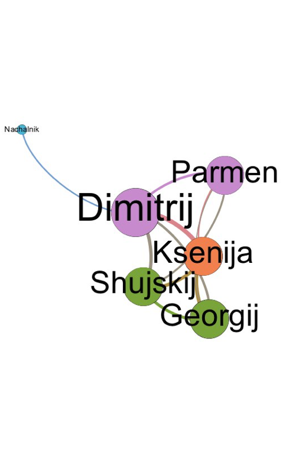 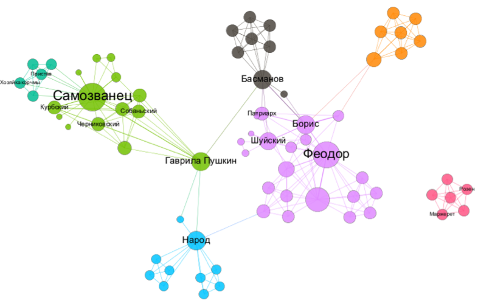Gavrila Pushkin — is he important?
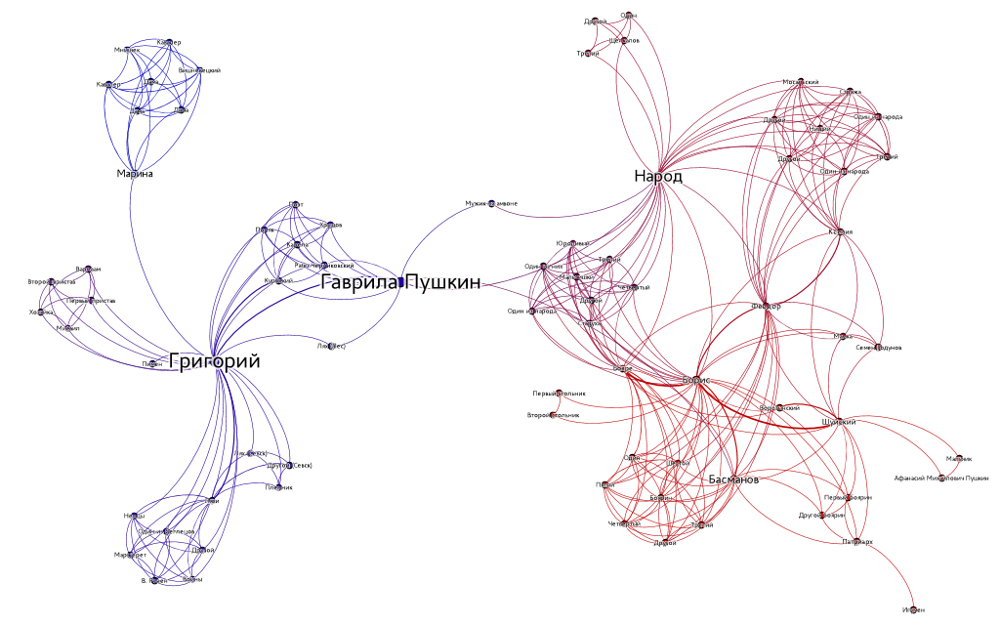Let's get back to Moretti for a sec
Though Horatio is an old fixation of mine, I had never fully understood his role in Hamlet until I looked at the play’s network structure.
Franco Moretti. Network Theory, Plot Analysis (Chapter 9 of the “Distant Reading” book)
Moretti 'dissecting' the network
“<..>if we remove, first Hamlet, and then Horatio <..>, then the fragmentation is so radical that the Ghost and Fortinbras — which is to say, the beginning and the ending of the play — are completely severed from each other and from the rest of the plot. Hamlet no longer exists. And yet, Horatio is slightly less central than Claudius in quantitative terms”
Franco Moretti. “Distant Reading”
Makes sense to comapre different network centralities
Degree centrality
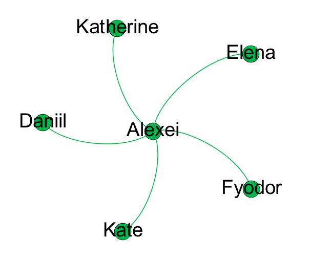| Node | Degree centrality |
|---|---|
| Alexei | 5 |
| Daniil | 1 |
| Katherine | 1 |
| Fyodor | 1 |
| Elena | 1 |
| Kate | 1 |
Node size proprortional to degree:
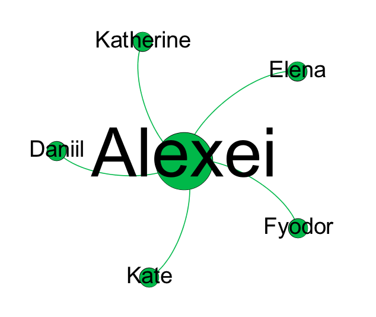Betweenness centrality:
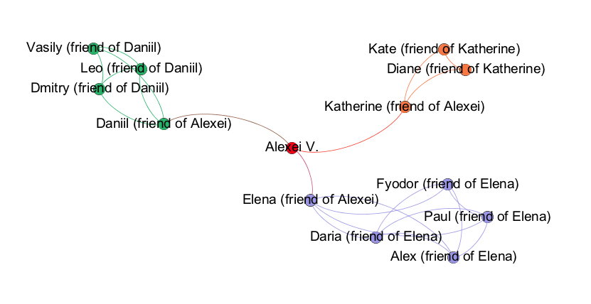Node size proprortional to betweenness:
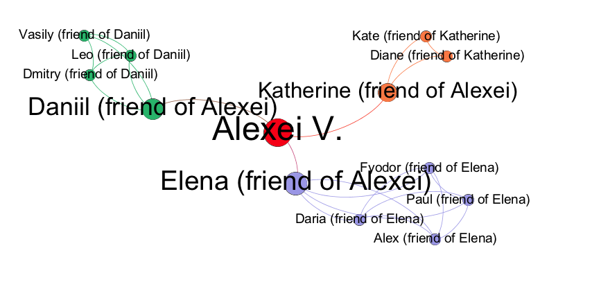Checking Moretti's assumptions
| Character | Degree | Betweenness |
|---|---|---|
| Hamlet | 19 | 219,4 |
| Claudius | 16 | 131,6 |
| Horatio | 14 | 176,7 |
So, Moretti seems right, even though he almost did not use the maths behind the network science. Horatio is less central in terms of basic centrality, but he is more important for holding the entire play together.
Back to Gavrila Pushkin!
Gavrila Pushkin: node degree

Node&label size = Node Degree
Gavrila Pushkin: betweenness

Node&label size = Betweenness Centrality
Gavrila the messenger
Pushkin, 'My pedigree'
<...>"About the Tsars the Pushkins moved"<...>
When the Romanoffs upon the throne
The nation called by its Chart --
We upon it laid our hands
Catching other hidden figures with network measures
Bityagovsky (double agent)
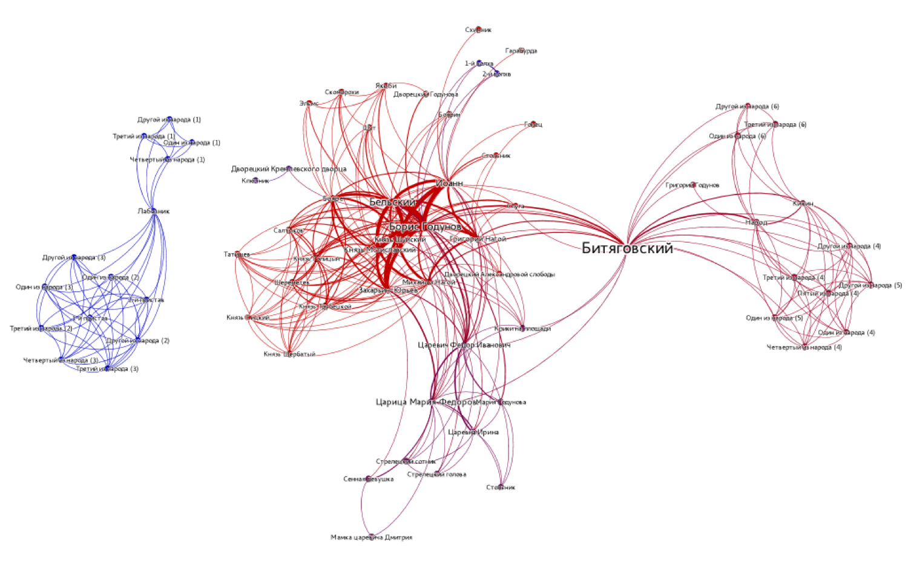A.K. Tolstoi, The Death of Ivan the Terrible (1866)
Kalachnik / kalach baker (yet another agent)
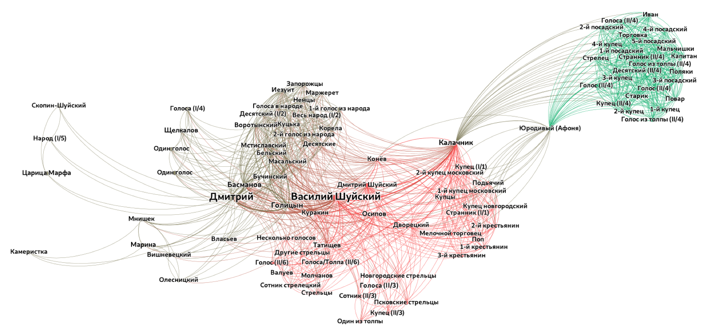A.N. Ostrovskiy, Dimitry the Impostor and Vasiliy Shujskiy (1866)
Kalachnik speaks for himself
Калачник:Что я-то?! Я не сыщик, не доносчик;
Я — весь народ московский; вот кто я!
Kalachnik:So what about me? I am no whistle blower;
I am the entire people of Moscow, that's what I am!
Review of the play circa 2007
«Довольно загадочной кажется фигура Калачника, темпераментно сыгранного Антоном Хомятовым: с одной стороны, это человек из народа — поборник православной веры, мститель за брата, с другой — «человек в штатском», тайный агент Шуйского, провокатор и шпион. Похоже на то, что его торговля калачами только «прикрытие». Один раз за весь спектакль мы видим лоток на его плече, да и то пустой. Калачник называет себя «народом», но он, пожалуй, ох как непрост?»
Bitkov (spy on Pushkin)
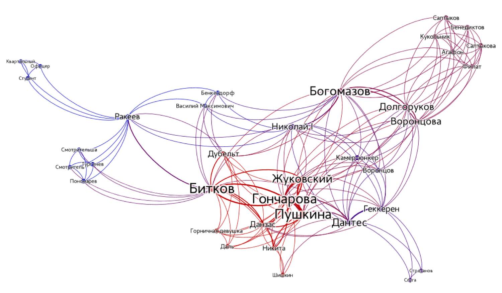M.A. Bulgakov, "Alexander Pushkin, (the Last Days)" (1935)
Back to macro-analysis
Basic metric: Network Density
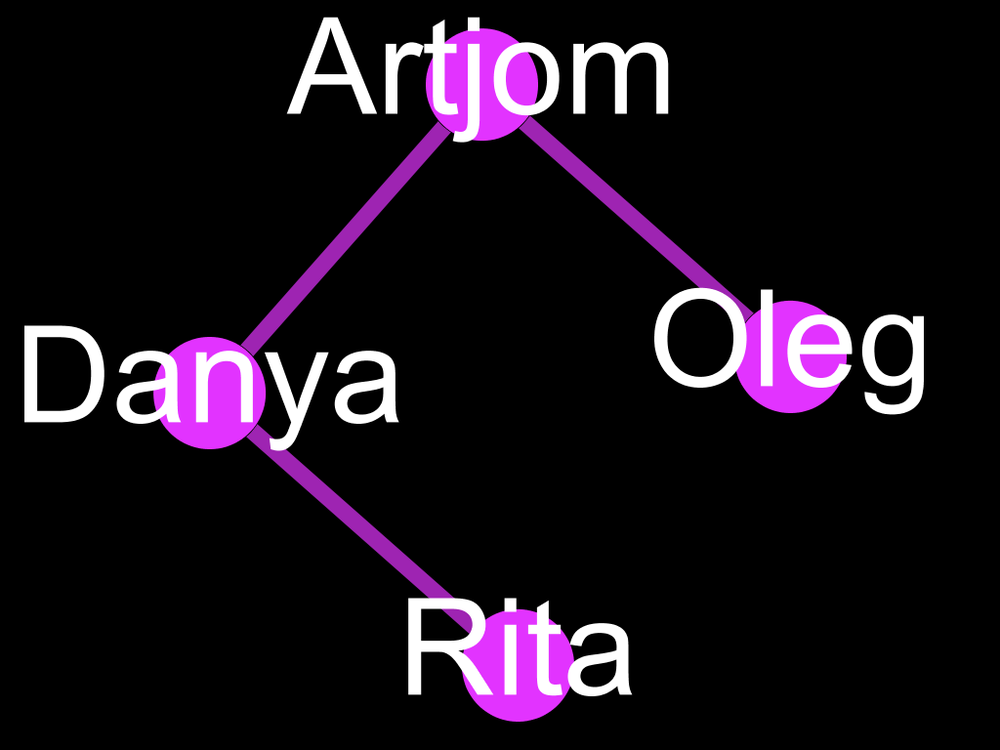 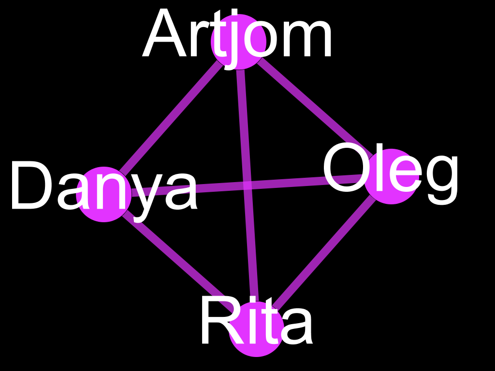Density = 0.5 (3/6) Density = 1 (6/6)
Densities of plays by genre
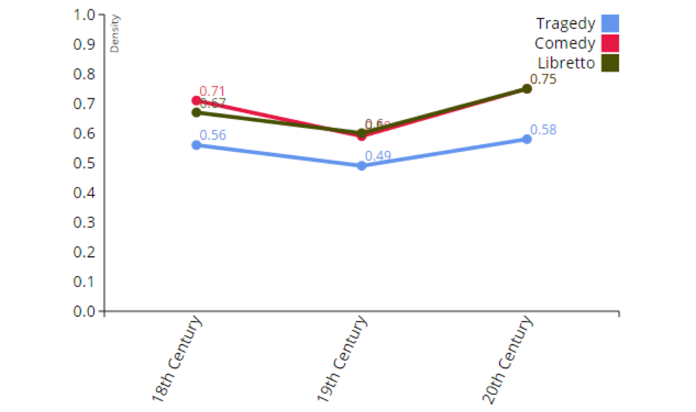Densities of plays by genre in RusDraCor
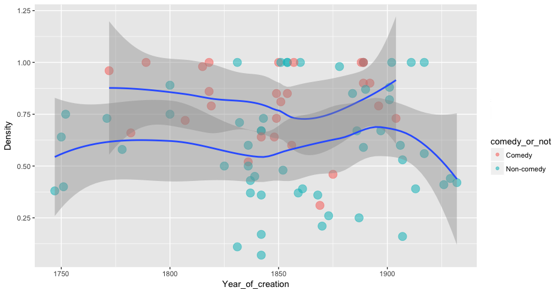More complex metric: the small-world-ness of network
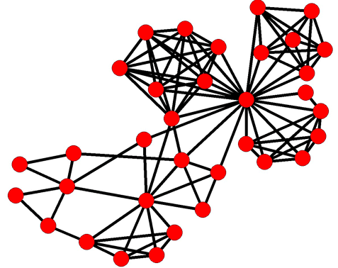Which plays have 'small world' property?
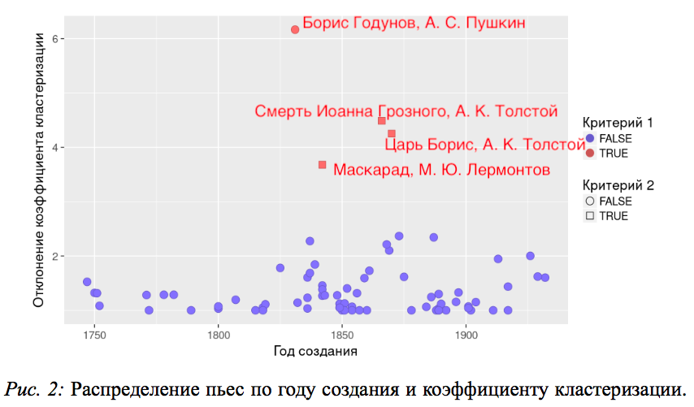About the markup
“Networks are made of vertices and edges; plot networks, of characters and verbal exchanges. In plays this works well, because words are deeds, deeds are almost always words <...>
Franco Moretti. “Distant Reading”
Act I
Scene 1
Elsinore. A platform before the castle FRANCISCO at his post. Enter to him BERNARDO
BERNARDO
Who's there?
FRANCISCO
Nay, answer me: stand, and unfold yourself.
<head>Act I</head>
<div type="scene"><head>Scene I</head>
<stage>Elsinore. A platform before the castle FRANCISCO at his post. Enter to him BERNARDO</stage>
<speaker>BERNARDO</speaker>
Who's there?
<speaker>FRANCISCO</speaker>
Nay, answer me: stand, and unfold yourself.
Dramatic text
= easy target for network formalisation
= easier to automate & scale up corpus markup!
“<...> so, basically, a network of speech acts is a network of actions”.
Franco Moretti. “Distant Reading”
We Make These Actions (and Networks) Machine-Readable with:

Text Encoding Initiative (TEI/XML)
Enough with networks!
Evolution of stage directions
Stage directions, quite literally, don’t count.
Eric Rasmussen
Example of Stage Directions
<stage>Слуги уходят.</stage>
<stage>(Подходит к столу; ему дают место.)</stage>
<stage>Грохот, взрыв, выстрел. Победоносиков распахивает дверь и бросается в квартиру. На нижней площадке фейерверочный огонь. На месте поставленного аппарата светящаяся женщина со свитком в светящихся буквах. Горит слово "Мандат". Общее остолбенение. Выскакивает Оптимистенко, на ходу подтягивает брюки, в ночных туфлях на босы ноги, вооружен. </stage>
Share of stage directions

Verb usage in stage directions

Parts of Speech
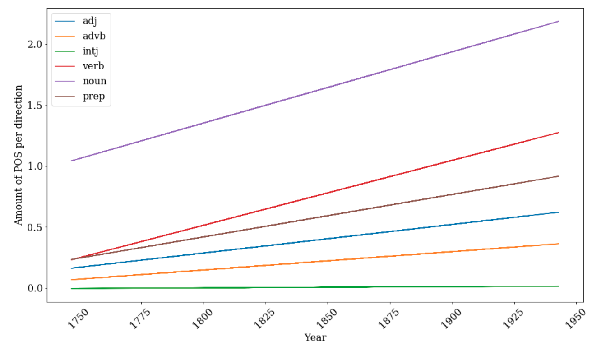(by Dasha Maximova)
FICTIONAL GENDER LANGUAGE STUDIES
<person xml:id="ZhenaLukiLukicha" sex="FEMALE">
<persName>Жена Луки Лукича</persName>
</person>
<person xml:id="Derzhimorda" sex="MALE">
<persName>Держиморда</persName>
</person>
<person xml:id="Hlestakov" sex="MALE">
<persName>Хлестаков</persName>
</person>
<person xml:id="UnterOfitsersha" sex="FEMALE">
<persName>Унтер-офицерша</persName>
</person>
<person xml:id="Korobkin" sex="MALE">
<persName>Коробкин</persName>
</person>
FICTIONAL GENDER LANGUAGE STUDIES